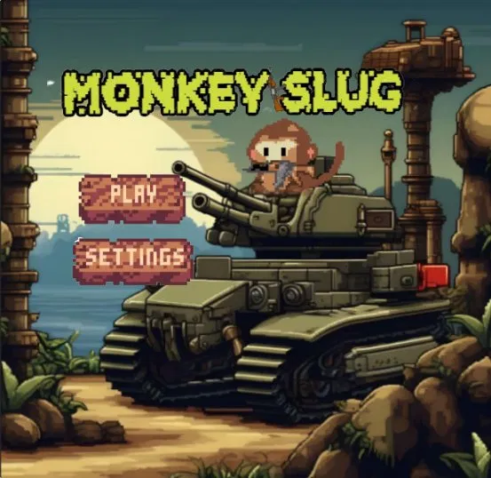
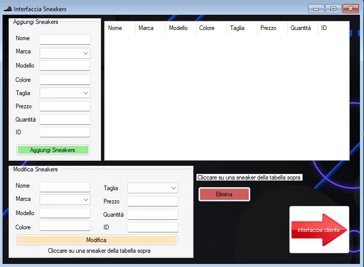
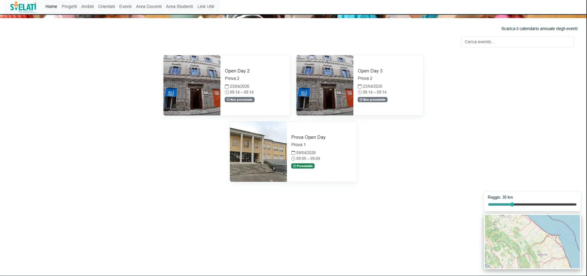

Durante il triennio ho lavorato a tre progetti principali, uno per anno, ognuno con tecnologie e obiettivi diversi. Ogni progetto è stato realizzato in gruppo e valutato dai docenti.
Monkey Slug — Gioco dell'anno

Monkey Slugabbiamo sviluppato uno "sparatutto" PvE 2D ispirato a Metal Slug, sviluppato interamente dal gruppo come progetto di fine anno. Il protagonista è una scimmia armata che affronta nemici in tre livelli progressivamente più difficili. Lo abbiamo poi sottoposto alla valutazione dei professori.
- 3 livelli con difficoltà crescente al superamento di ciascuno
- 3 vite a disposizione per completare la campagna
- Personaggio principale: una scimmia che spara
- Grafica pixel-art realizzata interamente dal gruppo
- Gameplay di tipo spara-tutto (shoot 'em up)
Gestionale Sneakers

Applicazione desktop per la gestione di un negozio di scarpe, con database collegato. Sviluppata con un compagno, permette di amministrare il catalogo prodotti in modo completo tramite un'interfaccia grafica.
- Inserimento di nuove sneakers con tutti i dati (nome, marca, modello, colore, taglia, prezzo, quantità)
- Eliminazione di articoli dal catalogo
- Visualizzazione con tabella interattiva e filtri avanzati
- Filtri per marca, taglia, prezzo e altri attributi
- Sezione di modifica rapida selezionando una riga dalla tabella
- Interfaccia cliente separata per la consultazione
Svelati — Pagina eventi

Progetto in collaborazione con altre classi dell'istituto. Il mio gruppo ha curato il frontend della sezione eventi: una pagina web che mostra tutti gli open day e gli eventi scolastici di una scuola italiana, con filtri e mappa interattiva.
- Visualizzazione di tutti gli eventi scolastici (open day, ecc.) con card informative
- Badge "Prenotabile" / "Non prenotabile" in tempo reale
- Data e orario per ciascun evento
- Filtro per raggio geografico tramite slider e mappa integrata
- Barra di ricerca eventi per nome
- Navigazione multi-sezione (Progetti, Ambiti, Orientati, Area Docenti, Area Studenti)